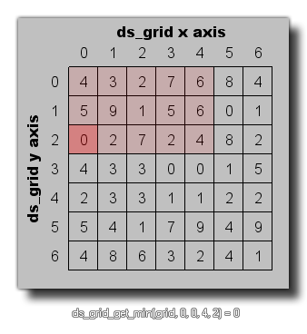

ds_grid_get_min(index, x1, y1, x2, y2);
| Argument | Description |
|---|---|
| index | The index of the grid. |
| x1 | The left cell column of the region. |
| y1 | The top cell row of the region. |
| x2 | The right cell column of the region. |
| y2 | The bottom cell row of the region. |
Returns : Real or String
This function can be used to find the minimum value for all the cells found within the defined region of a grid, as shown in the image below:

val = ds_grid_get_min(grid, 0, 0, 5, 5);
The above code will set the variable "val" to the minimum value contained within the given region of the ds_grid indexed in the variable "grid".